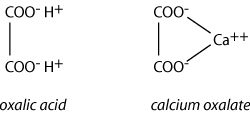

|
| Sources Structure and Formulation Pathophysiology Clinical Signs Post Mortem Signs Treatment References |
Oxalates are present in many plants (imparts a bitter taste to sorrels etc), in the free state as oxalic acid, or more commonly as the soluble sodium, potassium and ammonium salts. Sometimes they are present as calcium oxalate. Also produced by various moulds. Occasionally used as rust remover.
The oxalates occur mainly in the plant families Chenopodiaceae, Oxalidaceae and Polygonaceae. In New Zealand, the main oxalate containing plants which are toxic for grazing animals are sheep’s sorrel Rumex acetosella, rhubarb Rheum rhaponticum, arums Arisaema, taro, Colocasia esculenta elephants ear, Alocasia macrorrhiza and arum lily Zantedeschia aethiopica. Although common, Bermuda buttercup, Oxalis pes caprae has not been known to cause poisoning of livestock in New Zealand. In Australia there are a number of oxalate containing plants which cause stock poisoning. These include Oxalis pes caprae (soursob), Salsola kali (soft rolypoly), Trianthema portulacastrum (black pigweed), and Threlkeldia proceriflora (soda bush). In addition, a number of cultivated grasses contain soluble oxalates at lower levels than the above, but these too have been associated with livestock poisoning.

Soluble oxalate is rapidly broken down to carbonate and formate in the rumen or else precipitated as insoluble calcium oxalate. Both processes cause neutralisation of oxalate ions and prevent their uptake by the animal. Where there is substantial absorption of oxalate the ruminal mucosa is damaged and calcium oxalate crystals may be precipitated in the submucosal arteries. Free circulating oxalate may directly damage the lung capillaries and cause pulmonary oedema. In the kidneys oxalate is secreted by the tubular epithelial cells and calcium oxalate crystals are precipitated in the tubular lumens resulting in fatal renal tubular necrosis. At the same time, plasma calcium concentration falls in the presence of high plasma oxalate levels and clinical signs of hypocalcaemia may occur.
Acute Oxalate Poisoning This has been reported in New Zealand in sheep. It has been associated mainly with the grazing of sheep’s sorrel and has occurred when hungry stock have either been placed on sorrel infested paddocks or have been driven where sorrel is an abundant road
side plant. The clinical signs are not unlike those of hypocalcaemia. Animals stagger and become recumbent, there is a nasal discharge, muscular spasm develops and breathing becomes difficult. Animals usually die in a coma. The injection of calcium borogluconate causes a temporary response in some animals, which subsequently relapse and die due to acute renal failure. Clinical signs of renal tubular necrosis are oliguria, depression, vomiting, azotaemia, hyperkalaemia and cardiac failure. Chronic Oxalate Poisoning This is commonly reported in Australia in sheep grazing pastures dominated by Oxalis pes
caprae (sour sob). Sheep usually tolerate the plant well, but its persistent intake produces kidney damage, renal failure and death. Animals may need to graze the pasture for several months before signs of poisoning develop. Oxalate Toxicity in Horses Horses, unlike ruminants, have no destructive mechanism for oxalates so that the regular ingestion of oxalate
containing plants will cause a serious precipitation of calcium in the gut, resulting in an overall negative calcium balance. After several weeks or months of grazing oxalate
containing plants, horses may develop a nutritional secondary hyperparathyroidism which produces osteodystrophia fibrosa. Horses cannot be reared satisfactorily on oxalate
containing pastures. The main features are severe pulmonary congestion with copious amounts of froth in the trachea and bronchi. There is a marked hyperaemia of the mucosa of the fore stomachs and intestines. The kidneys are usually swollen and have a pale cortex. When the animal is seen soon after ingestion decontamination to reduce absorption is recommended. Activated charcoal or limewater (calcium hydroxide) (or even milk) to prevent oxalate absorption is useful. Supportive therapy for hypocalcaemia and nephrosis (iv fluids, calcium borogluconate) may be indicated unless advanced clinical signs are present which indicates a poor prognosis. Connor, H.E. (1977). The Poisonous Plants in New Zealand. E.C. Keating, Government Printer, Wellington, New Zealand.
Seawright, A.A. (1982). Animal Health in Australia. Vol. 2. Chemical and Plant Poisons. Australian Bureau of Animal Health. Australian Government Publishing Service, Canberra. Surveillance (1974) 1(1): 14 Oxalate poisoning of sheep. Surveillance (1975) 2(5): 15 Oxalate poisoning (cattle). Surveillance (1976) 3(3): 16 Oxalate poisoning (sheep). Surveillance (1982) 9(3): 25 Oxalate poisoning of ewes. Von Burg R. Oxalic acid and sodium oxalate.Journal of Applied Toxicology. 14:233
7, 1994 Vernot EH. MacEwen JD. Haun CC. Kinkead ER. Acute toxicity and skin corrosion data for some organic and inorganic compounds and aqueous solutions. Toxicology & Applied Pharmacology. 42:417
23, 1977. |
|
|